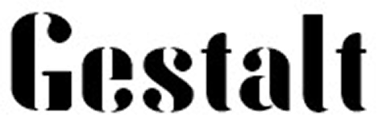
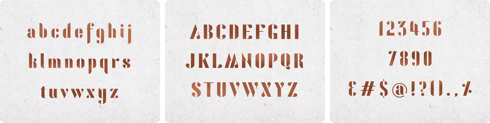
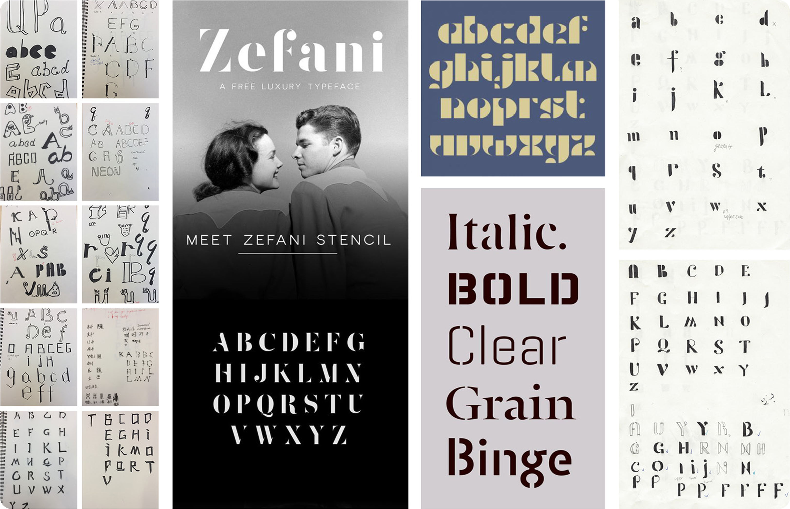
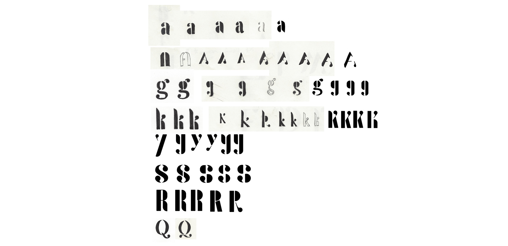
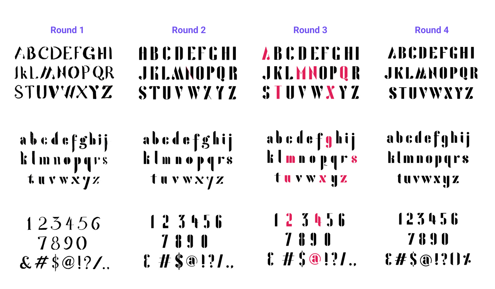
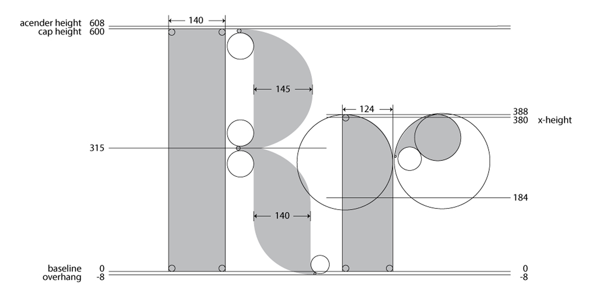

Gestalt – typeface
Typeface design
Project challenge: Design a cohesive, refined typeface and produce an installable font.
Tools
FontLab Studio
Adobe Illustrator
Adobe After Effects
Deliverables
An Installable font
A motion graphics video showcasing the typeface
Duration
3 months
Typeface name


exploration
Finding the concept
After exploring multiple directions, I chose to create a modern, elegant stencil typeface. I challenged myself to create letterforms whose interrupted strokes form a unified whole. I named the typeface Gestalt after the perceptual principles of closure and continuity that inspired this concept.

Refinement
Defining distinctive letterforms
First, I focused on a, A, g, k, y, S, R, and Q, whose stroke connections made placing stencil breaks challenging. I refined these breaks and defining features—such as A’s apex, S’s spine, and Q’s tail—to establish a distinctive, cohesive style.

4 rounds of character set refinement
Across four rounds of refinement, I developed a consistent approach to stroke breaks throughout the character set. I adjusted their placement, width, and alignment so that separated strokes would suggest continuous letterforms.

Final anatomy refinement
I refined the entire character set for visual consistency, adjusting cap height, ascender height, x-height, overhang length, stroke width, corner radius, and curve radius. The anatomy of R and r below illustrates these refinements.
